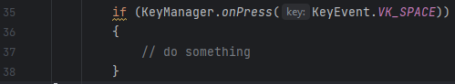

Arkito's Key Manager class statically handles all keyboard inputs for you. This way, your game can access the Keyboard Manager methods wherever and whenever you want. A key has three different states: idle, pressed, held, and released. If you are unfamiliar with the AWT KeyEvent library, please refer to Oracle’s documentation.
Check if a key has been pressed with the onPress(KeyEvent) method or with the onPress(char) method. It’s recommended that KeyEvent.keyCode is used. Returns a boolean.
Check if a key is being held with the isHeld(KeyEvent) method or with the isHeld(char) method. It’s recommended that KeyEvent.keyCode is used. Returns a boolean.
Check if a key has been released with the onRelease(KeyEvent) method or with the onRelease(char) method. It’s recommended that KeyEvent.keycode is used. Returns a boolean.
If the key is neither pressed, held, nor released, all aforementioned methods will return a boolean of false.
Returns true if any key is being held, pressed, or released. Returns false otherwise.
Returns true if any key is being pressed. Returns false otherwise.
Generic Example (if statement is true if the space bar has been pressed on keyboard):
